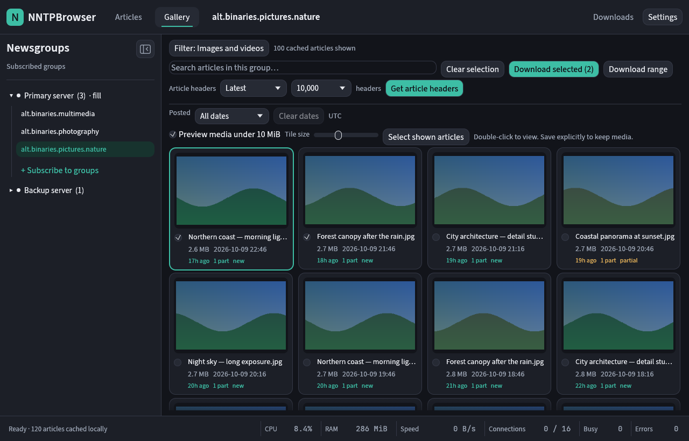
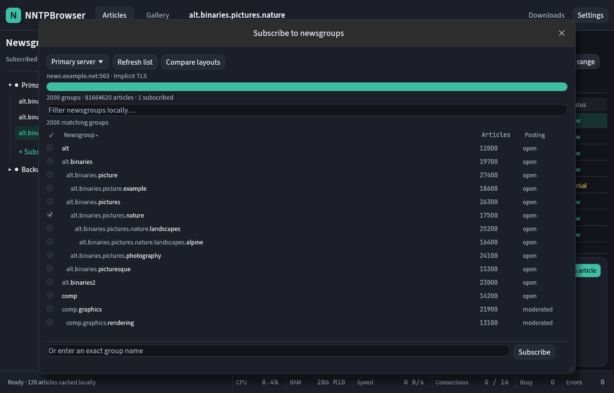
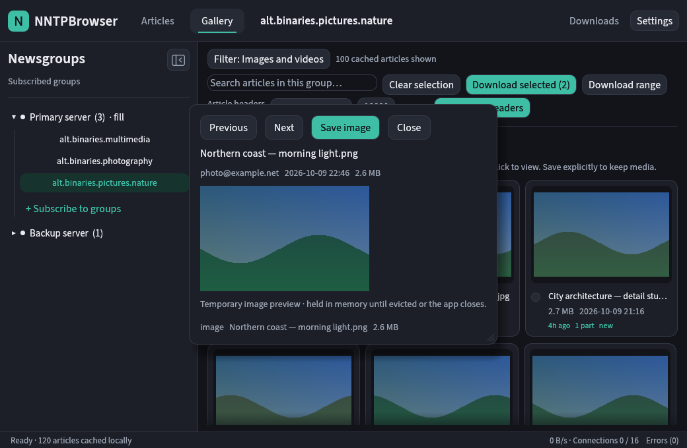
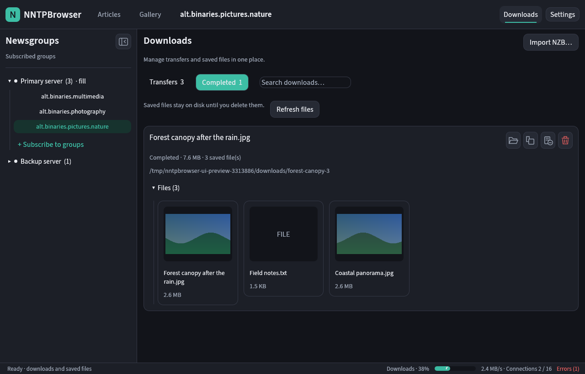
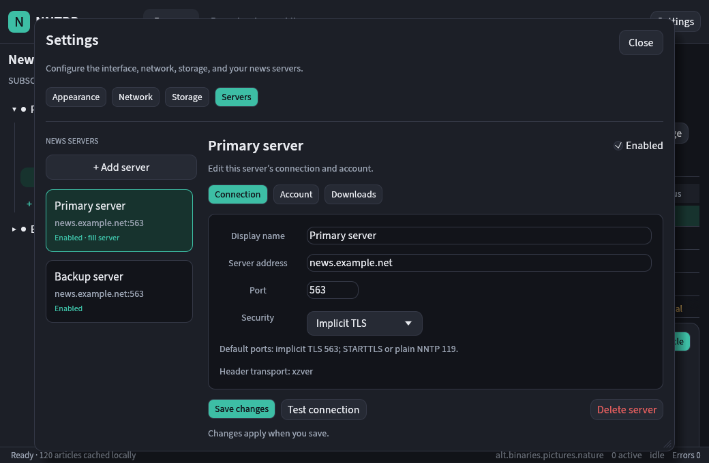

Articles, with context
A resizable article list and details pane. Search cached titles, read article bodies, and download selected files or a range of matching articles.
Native desktop · Rust + egui
Read articles. Browse media. Bring files home.
A modern newsreader with a familiar layout and a carefully bounded cache.
Open source · MIT · Linux, Windows, macOS & FreeBSD

A mail-style reader and a visual media gallery.
Gallery browsing creates no saved files or jobs.
Missing parts, PAR2 recovery, and a durable queue.
Built for browsing
Servers and groups on the left. Your active group at the top. The details and controls where you need them.
A resizable article list and details pane. Search cached titles, read article bodies, and download selected files or a range of matching articles.
Preview visible images and videos under your size limit. Offscreen requests stop; completed previews stay in a bounded RAM cache. Saving is explicit.
Start with the latest 10,000 headers. Fetch new, older, or all available headers, with cancellable progress and committed batches kept safely.
Import NZBs, pause, resume, and retry. Automatic recovery searches for matching missing parts and fetches PAR2 volumes as needed before verification.
Checksummed zstd header blocks and a transactional SQLite catalog. Search and UTC date filters work across cached articles before pagination.
Connection activity, smoothed transfer rates, process RAM and CPU, and inspectable error history. Tune TLS, connection limits, preview budgets, and storage paths.
A closer look
Actual app screenshots from isolated offline fixtures. Click any image to see it at full size.




Under the surface
The interface is built with egui. A background Rust runtime handles network access, decoding, and the download pipeline.
Implicit TLS and STARTTLS, with certificate verification. Server-specific connection limits apply across headers, previews, and downloads.
Compressed, checksummed header blocks alongside SQLite metadata. Selected article bodies use a separate bounded compressed cache.
Manage servers and subscriptions, fetch headers, list articles, and control jobs from the CLI.
nntpbrowser sync 1 --limit 10000
nntpbrowser posts 1Get started
Choose a package for your desktop. Bring your own Usenet server account, then add it in Settings and subscribe to a group.
Intel and AMD desktops.
Download AppImage64-bit ARM systems.
Download AppImageInstaller or portable app.
Download x64 MSI x64 portable ZIPOne app for Apple silicon and Intel.
Download DMG Command-line tools ZIPAd-hoc signed; not notarized.
A tar archive for amd64 systems.
Download .tar.gz Release notes & requirementsUse the Rust toolchain to build the desktop app and CLI.
git clone https://github.com/mnj/nntpbrowser.git
cd nntpbrowser
cargo run -p app --bin nntpbrowserPackages publish to the rolling latest release after all platform builds pass. Download links become available after the first successful publication. Windows builds are unsigned; macOS builds are not notarized. All releases, checksums, and release notes ↗
Gallery previews default to files smaller than 10 MiB and a 64 MiB RAM cache. Videos may need to be saved for playback; some formats show an icon rather than a poster. Payload decoding supports yEnc, uuencode, and POSIX begin-base64. RAR extraction needs unrar or unar. Recovery searches are bounded: insufficient repair data, incomplete sequential uuencode, and multiple independent repair sets can still leave a job incomplete.
Read the documentation for storage behavior, supported protocol extensions, and current limitations.